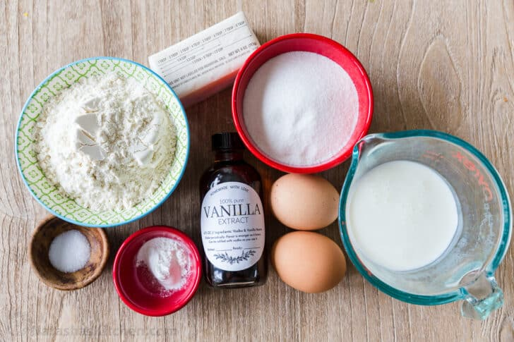

Perfect Vanilla Cupcake Recipe
Made by
Aziz Karnit
May 29, 2020
Everyone loves cupcakes! This is the only vanilla cupcake recipe you will need. They are super easy to make and the texture is light, fluffy, and melt-in-your-mouth good.

Ingredients for Vanilla Cupcakes:
This recipe makes exactly 12 cupcakes and requires simple ingredients: all-purpose flour, butter, sugar, eggs, buttermilk, baking powder, salt and vanilla. The combination of softened butter and buttermilk creates an amazingly soft cupcake crumb that just melts in your mouth.
How to Make Vanilla Cupcakes:
These cupcakes are easy to master and you will be making bakery-quality cupcakes in no time.
- In a medium bowl, whisk together dry ingredients: flour, baking powder, and salt.
- In a second bowl (or bowl of your stand mixer), beat together softened butter and sugar on medium-high speed 5 minutes until thick and fluffy.
- Beat in eggs 1 at a time, mixing to incorporate with each egg then blend in vanilla and scrape down the bowl.
- Reduce mixer to medium speed and add the flour in thirds, alternating with adding the 1/2 cup buttermilk and beating well between additions.
- Pour batter into 12 lined muffin tins, filling 2/3 full. Bake in the center of the oven at 350˚F for 20-23 minutes, or until a toothpick inserted into the center comes out clean. Let cool 5 minutes in the pan then remove cupcakes to a wire rack to cool completely.
Tips for the BEST Cupcakes:
- Room Temperature Ingredients – eggs, buttermilk and butter must be at room temperature to keep your batter an even consistency.
- Alternate Adding Flour and Buttermilk – this keeps the mixture uniform and well blended. If you add in all of the flour or buttermilk at once, it can saturate the creamed butter and cause the mixture to separate. Mix well between each addition.
- Measure Correctly – be sure to use the proper measuring cups for wet and dry ingredients.
- Don’t Overfill– Fill cupcake liners 2/3 full or they will overflow and cause a muffin top. If you divide evenly between 12 cupcakes, you should have exactly enough batter.